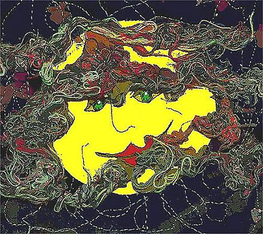

Ray Liversidge
Pathetic Fallacy

The evening sky is bruised and bloodied. Stars
Prepare to collapse, cars ready for bed.
While the rotary hoist recoils from the coming dark,
The lawnmower sleeps soundly in the garden shed.
Street lights consider retiring for the night
As the house braces itself against the cold.
The fence leans and whispers to the lawn to be quiet,
Wires hum lullabies from telegraph poles.
Inside, a fist unclenches to clutch at a breast;
Outside, a cloud threatens the moon.
He says he hates it when she’s obmutescent,
Yet swears her words won’t end this poem.
As love is not undone by acts of violence,
The night is not reclaimed with vows of silence.
Ray Liversidge is an Australian poet who arrived home in November 2007 after travelling to the UK and Ireland on a reading tour. His first book Obeying the Call was published in 2003. His verse novel The Barrier Range, which draws on the expeditions of early Australian explorers Burke and Wills, and Charles Sturt, was published in 2006. Ray has his own website at http://poetray.wordpress.com/. He is currently working on another manuscript on the work and lives of dead poets.
|